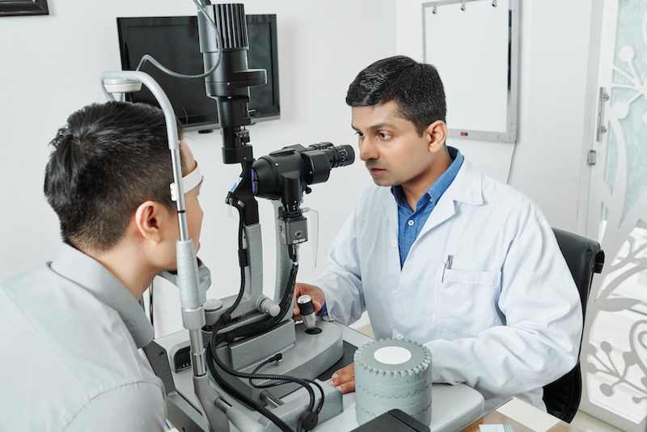

Jakarta, Suatu skandal terjadi di sebuah rumah sakit mata swasta besar dimana para staf manajemen rumah sakit mata dituduh oleh perwakilan dari Federasi Dokter Mata Independen dan karyawan rumah sakit.
Alasannya, sengaja tidak menggunakan produk yang bisa memulihkan penglihatan sebesar 87-92% tanpa pengobatan dan operasi.
Awal tahun ini, delapan dokter dan profesor, merilis surat terbuka "menyelamatkan rumah sakit spesialis mata terkemuka dari keserakahan, korupsi, dan penipuan".
Surat terbuka itu diantaranya ditandatangani oleh beberapa dokter dan professor, antara lain:
- Dr. Ayu Ningtyas Ph.D, Sp.M., Ketua Serikat Dokter Spesialis Mata Independen dan dokter mata,
- Profesor dr. Arief Gunawan Sp.M., spesialis penyakit mata di Serikat Dokter Spesialis Mata Independen,
- Profesor dr.Cahya Kusuma Sp.M., anggota Serikat Dokter Spesialis Mata Independen, dokter spesialis mata, salah satu pendiri rumah sakit mata swasta,
- Profesor dr. Faisal Kristian, Spesialis penyakit mata di klinik swasta, Jakarta,
- Profesor dr.Hafiz Fazzal, dokter spesialis bedah mata, staf di klinik mata swasta, Jakarta.
Para dokter tersebut mengklaim bahwa pihak manajemen klinik melarang mereka untuk menggunakan produk”VISION”, yakni produk yang digunakan untuk mengobati pasien mereka.
Beberapa alasan dilontarkan, termasuk produk “VISION” ini memungkinkan untuk mampu memulihkan penglihatan tanpa melakukan operasi dalam 86% kasus, sehingga terjadi penurunan jumlah operasi dan keuuntungan rumas sakit mata tersebut.
Ketua Serikat Dokter Spesialis Mata Independen, Dr. Amelia Miranty, juga salah satu yang ikut menandatangani surat tersebut, mengatakan kepada reporter.
“Sekarang ini, manajemen rumah sakit disetir oleh keuntungan belaka. Kata mereka, tanpa keuntungan penyedia perawatan kesehatan ini akan bangkrut. Padahal tidak begitu adanya, karena rumah sakit ini beroperasi dengan sokongan hibah dan bantuan dari pihak donatur. Sementara pemasukan dari prosedur operasi, yang tentu saja tidak murah, berakhir di kantong. Anda tahu sendiri!”
Menurut Dr. Amelia Miranty Ph.D, Sp.M., Ketua Serikat Dokter Spesialis Mata Independen, sekarang ini salah satu rumah sakit mata terkemuka di Jakarta beroperasi hanya untuk mendapatkan keuntungan alih-alih untuk mengobati masyarakat. Untuk mengeruk keuntungan, operasi mata dilakukan dengan begitu mudah dan seringnya seakan-akan itu hal yang lazim.
“Akan saya berikan angka-angkanya, kerap lebih meyakinkan dari sekadar kata-kata: pada tahun -2018, biaya operasi mata yang dilakukan di klinik ini meningkat hampir 150%, dan jumlah operasi berlipat ganda! Bahkan terjadi meskipun negara kita dilanda resesi ekonomi saat itu.
“Apakah masyarakat kita memiliki lebih banyak uang? Saya ragu! Sekarang ini para dokter diam-diam diminta untuk merekomendasikan operasi kepada semua pasien. Pasien pasti rela melakukan apa pun untuk mendapatkan kembali penglihatan mereka, dan karena itu mereka seringkali setuju.”
“Pada saat yang sama, hanya sedikit orang yang tahu, - dan ngomong-ngomong, manajemen klinik mencoba segala cara untuk mencegah informasi ini menyebar, bahwa pengobatan modern saat ini memungkinkan kita untuk memulihkan penglihatan tanpa menggunakan laser atau pisau bedah”.
“Fakta ini sudah terbukti dalam berbagai penelitian klinis, serta dari penggunaan produk ini di rumah sakit kami. Negara-negara di Eropa membeli “VISION” dalam jumlah besar, sementara di negara ini, kita terus melakukan operasi kepada pasien, padahal faktanya, beberapa penglihatan mulai menjadi semakin memburuk di tahun berikutnya.”
“Operasi? Operasi mengakibatkan luka yang ada seumur hidup. Meskipun tidak terlihat, luka ini mengganggu kerja tubuh. Dan sedikit orang yang tahu bahwa dalam lebih dari 90% kasus, 3-5 tahun kemudian, operasi harus diulang, sedangkan “VISION” memungkinkan kita memulihkan penglihatan secara permanen dan tanpa operasi. Bahkan “VISION” menyehatkan semua proses yang terjadi di organ penglihatan itu.”
Tujuan dari “VISION” dan Sedikit Sejarahnya
Kepala pengembang produk ini adalah seorang dokter spesialis mata terkenal di Indonesia, spesialis bedah mikro mata, profesor, sekaligus anggota Serikat Dokter Spesialis Mata Independen, Dr. Angga Prasadja.
Dr. Angga menggunakan sejumlah teknik yang fundamental dalam dunia oftalmologi modern.
Produk ini sudah mulai dikembangkannya pada tahun 1993 di Pusat Penyakit Mata Jakarta dan kemudian diberi nama “VISION”.
Beberapa ilmuwan ikut serta bekerja selama hampir 5 tahun untuk menciptakan formula ini, tujuannya untuk meningkatkan penglihatan secara signifikan tanpa operasi dengan meningkatkan kekuatan otot mata dan membersihkan kekeruhan kornea.
Formula ini dapat digunakan untuk mengobati penyakit-penyakit mata berikut ini:
- Miopia,
- Glaukoma,
- Katarak,
- Radang saraf optik,
- Neuritis optik,
- Uveitis,
- Chorioretinitis,
- Ablasi retina,
- Kekeruhan kornea,
- Peradangan kelopak mata,
- Konjungtivitis,
- Retinitis pigmentosa,
- Keratitis.
- Dan Banyak Lagi
Namun begitu, banyak pasien dalam negeri tak pernah punya kesempatan untuk menggunakannya.
Tanggal 2 Juni 2000, sebuah tragedi terjadi: Dr. Angga meninggal dunia dalam kecelakan helikopter bersama dengan satu pilot dan dua penumpangnya.
Setelah kematian sang ilmuwan, staf-nya tidak mampu menyelesaikan obat baru ini, padahal saat itu prosesnya sudah mencapai tahap uji coba klinis. Hasilnya juga sangat positif.
Hal tersebut menyebabkan banyak yang saling berebut untuk mencoba mengklaim kepemilikan obat ini.
Periode yang penuh dengan intrik dan konflik pun dimulai.
Ketika sebuah perusahaan Swiss, yang mengetahui keampuhan formula itu, membeli hak atas formulanya dan 2 tahun kemudian menyiapkan produksinya, dengan nama berbeda.
Hingga tahun 2015, berkat upaya dari istri dokter Angga, negara kita bisa mendapatkan kembali hak atas formula itu.
Zaman sudah maju, tentunya proses teknologi sudah maju dan berbeda. Ekstraksi nutrisi dari tanaman yang sudah ketinggalan zaman digantikan oleh teknologi ekstraksi dingin terbaru. Hal ini membuat efektivitas formula ini meningkat 47% karena ekstraksi dingin dapat mengawetkan zat aktif biologis penyembuh yang berasal dari tanaman yang terpilih hingga 3-5 kali lipat. Obat yang dikembangkan ulang ini diberi nama “VISION”.
Menurut para ilmuwan dan dokter, dalam 86% kasus gangguan penglihatan, “VISION” memungkinkan pasien untuk memperoleh penglihatan mereka hingga 100% tanpa operasi!
“Pengobatan bisa dilakukan di rumah, cukup meminumnya 2 kali sehari selama 3-6 minggu. Anda akan merasakan peningkatan penglihatan dalam waktu beberapa hari setelah dimulainya pengobatan”,
“VISION” – Uji coba klinis
“VISION” sudah menjalani uji coba klinis pada akhir tahun 2020 di Pusat Penelitian Penyakit Mata.
Total 3289 sukarelawan ambil bagian dalam uji coba ini.
- 94% subyek – meningkatkan penglihatan hingga performa terbaik
- 91% subyek – hilangnya gejala hiperopia
- 83% subyek – menyembuhkan katarak pada tahap awal
- 92% subyek – prosedur operasi untuk penyakit glaukoma bisa dihindari
- 98% subyek – tingkat kelembaban alami mata menjadi normal
Komposisi
“VISION” hanya terbuat dari ekstrak bahan alami yang sangat terkonsentrasi dari tanaman paling bermanfaat untuk kesehatan mata. Ekstrak ini meningkatkan ketajaman penglihatan, memperkuat retina, melindunginya dari kerusakan penglihatan.
Ekstrak ini juga meningkatkan sirkulasi mikro, memulihkan dan mendukung dinding kapiler. jaringan mata untuk mendapatkan nutrisi, mencegah degenerasi jaringan, meningkatkan mobilitas otot mata sehingga meningkatkan ketajaman penglihatan.
Uji coba klinis menunjukkan bahwa formula “VISION” dapat membantu:
- Pencegahan penyakit mata, termasuk miopia, glaukoma, dan katarak;
- Pemulihan kesehatan penglihatan;
- Melindungi mata dari kondisi tekanan yang meningkat (saat bekerja di depan komputer dan dampak negatif sinar UV);
- Menormalkan tekanan intraokular;
- Melindungi lensa mata, termasuk dari kekeruhan lensa mata;
- Meningkatkan ketajaman penglihatan;
- Meningkatkan kontras;
- Memperbaiki kerusakan sel yang terlibat dalam penglihatan;
- Melancarkan sirkulasi darah organ-organ penglihatan;
- Meredakan sindrom mata kering (Mata lelah, gatal, kemerahan, kering, pedih).
Program diskon
Program diskon "Koreksi penglihatan"
Institut kami bekerjasama dengan Fakultas Kedokteran dan Farmasi dengan “VISION”, dalam sebuah proyek pengobatan daring, kami memberi diskon.
Semua orang yang berpartisipasi dalam program ini bisa mendapatkan “VISION” dengan harga spesial Rp 150.000 saja!
Apa yang Anda harus lakukan untuk dapat berpartisipasi dalam program ini?
Persyaratan untuk membeli “VISION” dalam program ini:
- Memesan “VISION”. Pelanggan dan penerima harus orang yang sama. Ini penting untuk melawan perantara yang mencoba membeli “VISION” dalam jumlah besar dan menjualnya lagi dengan harga yang lebih tinggi.
- Melakukan pemesanan melalui formulir resmi program ini.
Berapa lama program diskon ini akan berlangsung?
Hingga persediaan “VISION” habis. Artinya kurang lebih dalam 3-4 minggu. Hari terakhir diskon untuk “VISION” adalah -
Banyak pasien “VISION” merekomendasikan produk ini kepada teman, rekan kerja, sanak saudara, sehingga produk ini bisa cepat habis.
Alasan itulah mengapa saya sarankan untuk memesan “VISION” sesegera mungkin. Soalnya program ini hanya sekali dan tidak diulang dalam setahun ini.